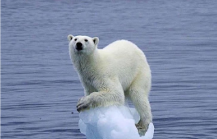
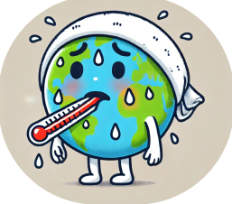

지구를 구해주세요
무엇이 지구를 아프게 할까요?
:무분별한 개발, 플라스틱 쓰레기, 산업 폐기물, 온실가스, 화석연료 등이 지구를 오염시킵니다. 모두 인간의 활동으로 인해 생겨난 것이기 때문에 우리 인간의 손으로 직접 지구를 되살려야 합니다.
우리가 일상생활에서 할 수 있는 건?
- 자가용 대신 대중교통 이용하기 - 자가용 대신 대중교통을 이용하면 온실가스 배출을 줄일 수 있습니다.
- 재활용 및 쓰레기 줄이기 - 쓰레기를 줄이면 쓰레기로 고통받는 동물들을 줄일 수 있습니다.
- 물과 에너지 절약하기 - 물과 에너지를 절약하면 동물들은 서식지를 덜 빼앗길 것이고 인간도 더 오래 풍요롭게 살 수 있습니다.
- 친환경 제품 사용하기 - 친환경 제품을 사용하면 지구에 도움이 될 수 있습니다.
- 분리배출 잘하기 - 분리배출을 잘하면 잘못 버려진 쓰레기로 죽어가는 동물들을 도울 수 있고, 재활용으로 더 건강한 지구를 만들 수 있습니다.
우리 모두의 작은 노력이 지구를 살리는 큰 힘이 됩니다!
save earth, save us

